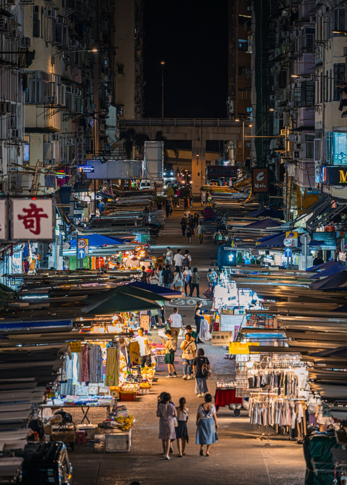
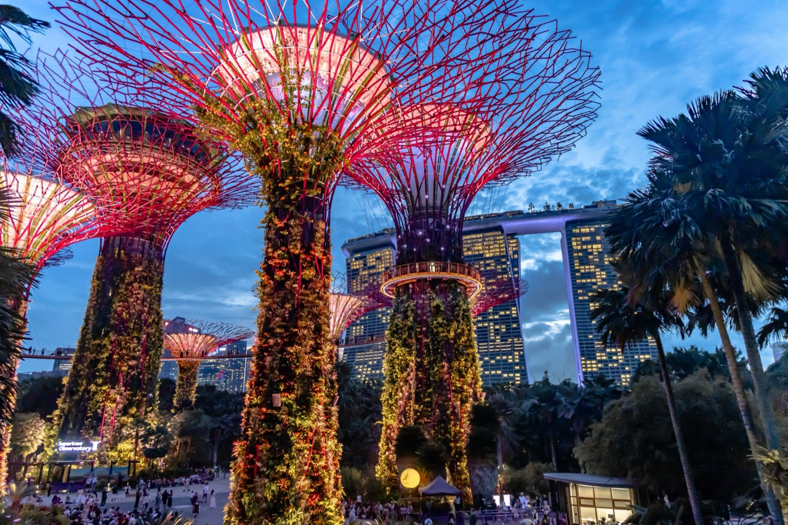
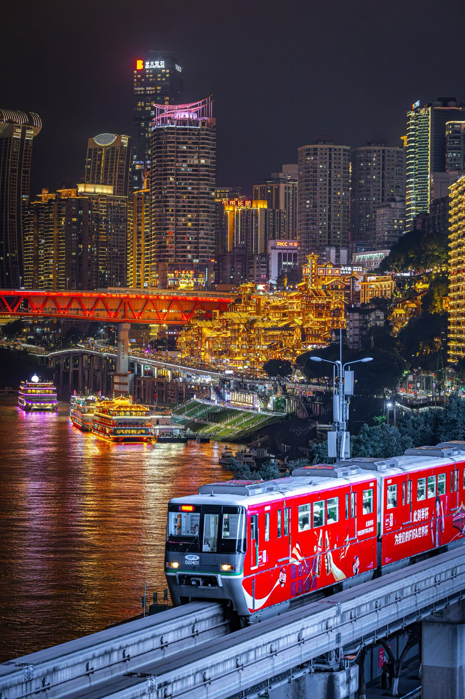

Matterhorn
Zermatt, SwitzerlandAugust 202437mmf/41/1600sISO 160

Each one on a sheet of its own, with how it was made, the trip it came from, and the place it shows.
Zermatt, SwitzerlandAugust 202437mmf/41/1600sISO 160

Kyoto, JapanJanuary 202537mmf/41/640sISO 1000

Hong KongMay 2025200mmf/3.51/25sISO 500

Wanaka, New ZealandJanuary 2026105mmf/91/1000sISO 200

SingaporeApril 202624mmf/41/125sISO 4000

Chongqing, ChinaJune 202695mmf/2.81/500sISO 8000

Barcelona, SpainJuly 2026135mmf/4.51/800sISO 125

Hội An, VietnamAugust 202658mmf/41/40sISO 10000